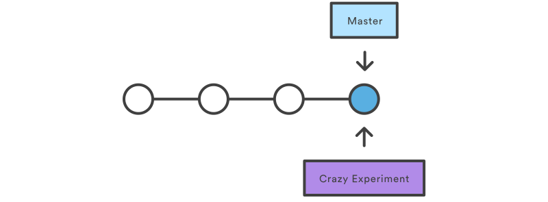
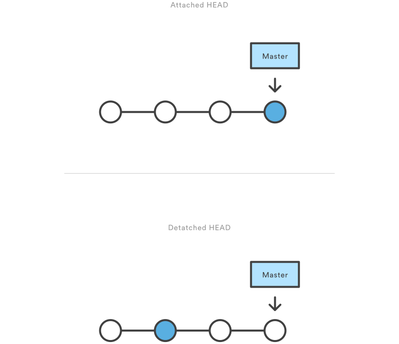
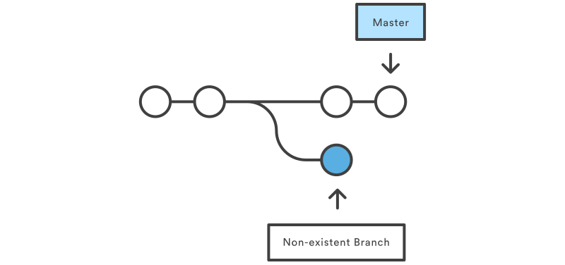
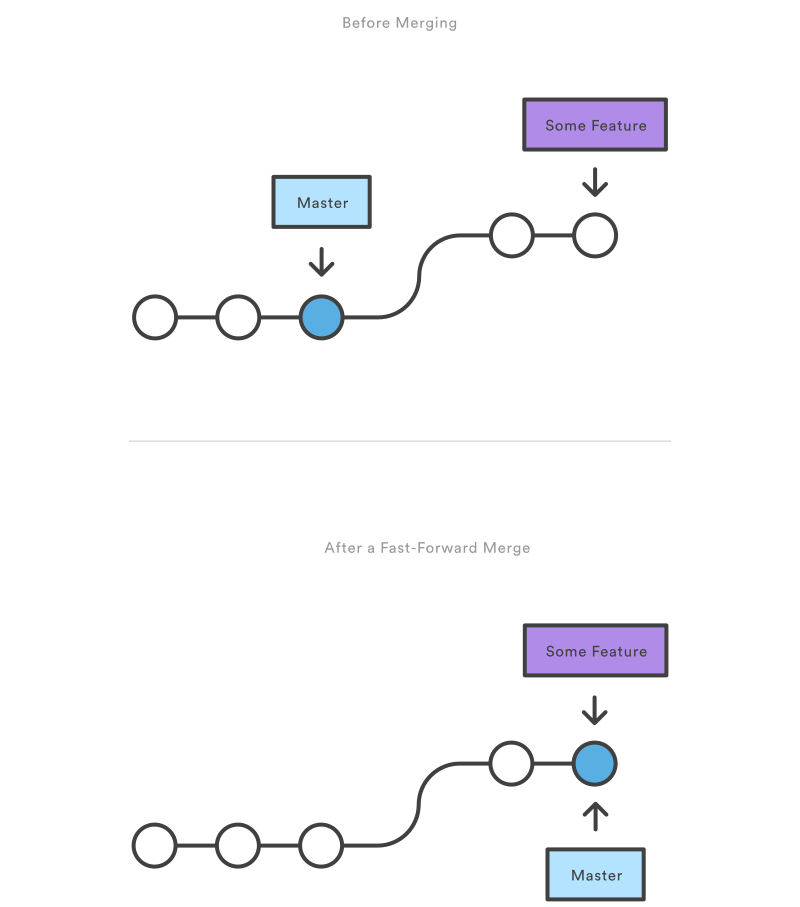

Branching & Merging
A branch represents an independent line of development. 
To list all branches
$ git branch
List all of the branches in your repository.
To Create a New Branch
$ git branch <branch>
Create a new branch called branch. This does not check out the new branch.
To Delete a branch
git branch -d <branch>
Delete the specified branch. This is a “safe” operation in that Git prevents you from deleting the branch if it has unmerged changes.
$ git branch -D <branch>
Force delete the specified branch.
$ git branch -m <branch>
Rename the current branch to
Checkout
git checkout <existing-branch>
Create a Branch & Checkout - Two Step Process
# Create a Branch
git branch <new-branch>
# Checkout the branch
git checkout <new-branch>
Create a Branch & Checkout - Just one Step Process
# One Step process
git checkout -b <new-branch>
Detached HEADs demystified
- HEAD is Git’s way of referring to the current snapshot.
- Internally, the git checkout command simply updates the HEAD to point to either the specified branch or commit.
- When it points to a branch, Git doesn't complain, but when you check out a commit, it switches into a “detached HEAD” state.

This is a warning telling you that everything you’re doing is “detached” from the rest of your project’s development. If you were to start developing a feature while in a detached HEAD state, there would be no branch allowing you to get back to it. When you inevitably check out another branch (e.g., to merge your feature in), there would be no way to reference your feature:
The point is, your development should always take place on a branch—never on a detached HEAD. This makes sure you always have a reference to your new commits. However, if you’re just looking at an old commit, it doesn’t really matter if you’re in a detached HEAD state or not.

Create a Branch
git branch new-feature
git checkout new-feature
or
git checkout -b new-feature
and
# Edit some files
git add <file>
git commit -m "Started work on a new feature"
# Repeat
Switch the branch
git checkout master
Merging
$ git merge <branch>
Merge the specified branch into the current branch. Git will determine the merge algorithm automatically.
Fast-Forward Algorithm

Three Way Merge

Resolving Conflicts
# On branch master
# Unmerged paths:
# (use "git add/rm ..." as appropriate to mark resolution)
#
# both modified: hello.py
#
Fast Forward Merging
# Start a new feature
git checkout -b new-feature master
# Edit some files
git add <file>
git commit -m "Start a feature"
# Edit some files
git add <file>
git commit -m "Finish a feature"
# Merge in the new-feature branch
git checkout master
git merge new-feature
git branch -d new-feature
3 Way Merging
# Start a new feature
git checkout -b new-feature master
# Edit some files
git add <file>
git commit -m "Start a feature"
# Edit some files
git add <file>
git commit -m "Finish a feature"
# Develop the master branch
git checkout master
# Edit some files
git add <file>
git commit -m "Make some super-stable changes to master"
# Merge in the new-feature branch
git merge new-feature
git branch -d new-feature